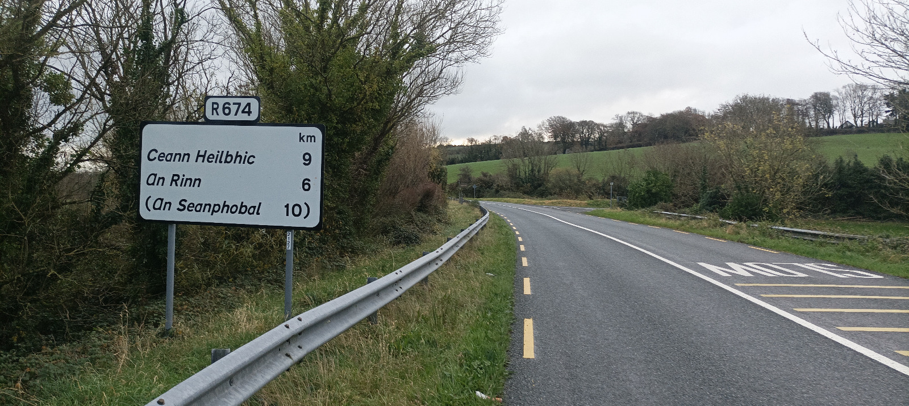
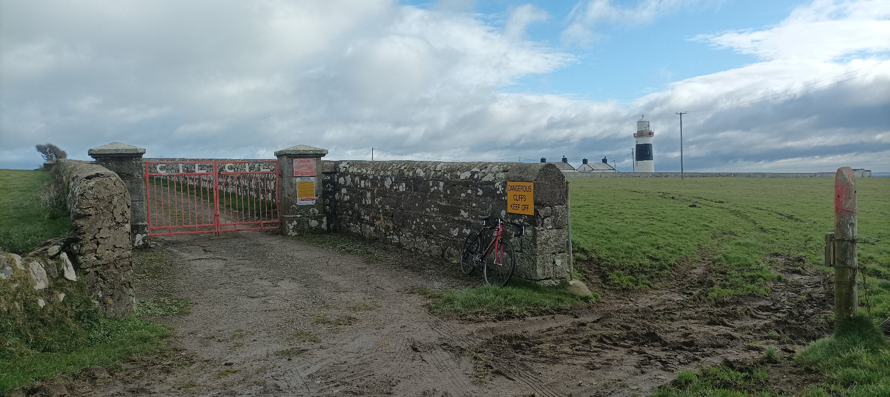
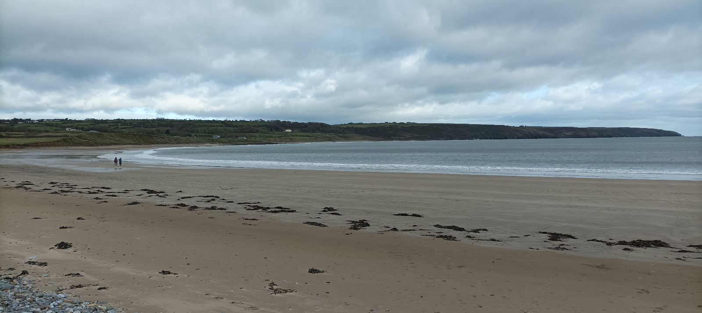
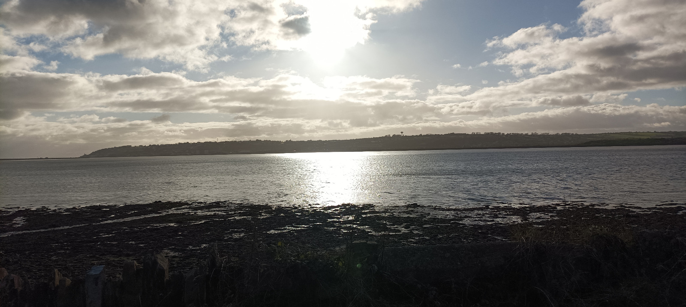
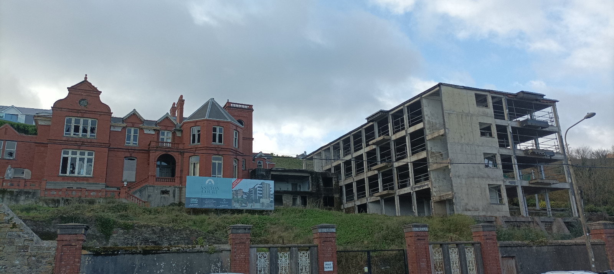
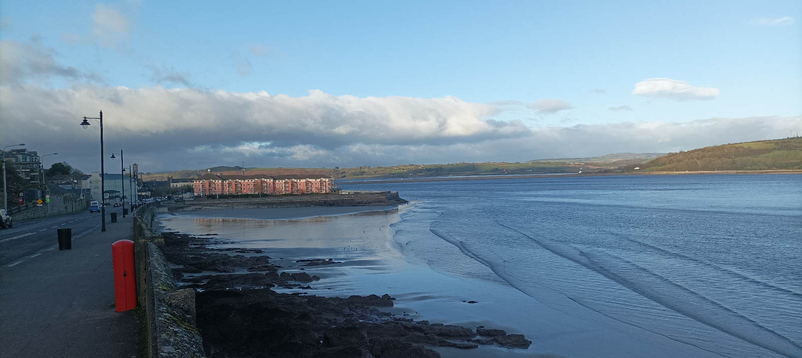
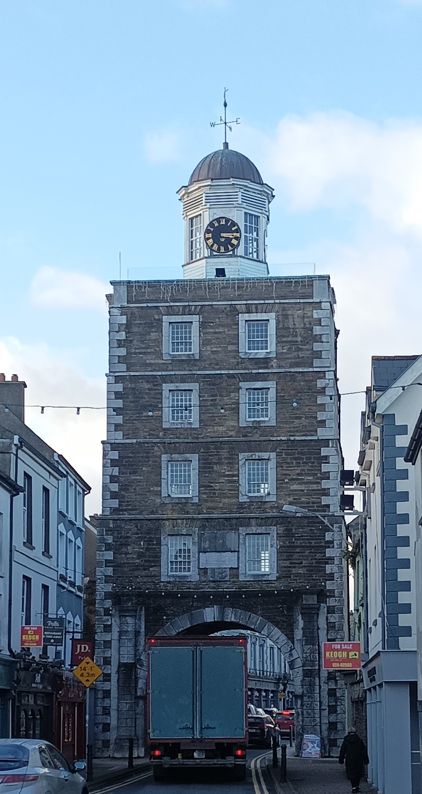

13 Mine Head & Youghal

0354, Monday November 20, 2023
I knew I’d wake up early cos my mind has been racing of late although I didn’t think it’d be this frikkin early. I don’t even bother wasting time trying to go back to sleep. I throw my bike into the MC Hammer and I lob my mam’s hoover in too cos I keep forgetting to drop it back to her, and their gaff is kind of on the way. I’m still not outta my gaff til 450 and I’ve to drive 200 clicks to Dungarvan, on the Munsterier side of Waterford county. From there, I’m aiming to see Mine Head Lighthouse in the Waterford Gaeltacht, then Youghal Lighthouse in the People’s Republic of Cork, the county I’m most excited about exploring. The cycle will be an 85k loop, from 8am to 4pm, with sixty-odd clicks along the coast and then a mouldy ol’ cycle back along the N25 because they ripped up all the trainlines back in the Doris.
13.1 The Benga Bus
On the motorway my mind is composing beautiful sentences, and I have them all written down in my head, but I can’t hang on to them like I can on the bike. The world changes at the wrong speed. This becomes even more obvious after I drop off the hoover, because Google Maps sends me across the back roads from the N4 to the M7, and now I’m burning good brain energy in negotiating narrow roads in the dark. I could have vetoed Maps and doubled back along the dual carriageway, minimising brain use, but the complaint ends up being academic because the entire journey is an exercise in wasting good energy, negotiating car after car in the dark. By the time I park up on the near side of Dungarvan at 8am, I’ve pissed away the best of my day’s brain power and I’m not even on the Paul van yet. I decide to test out the theory that Dubstep works best in the dark, so I lash on Mary Anne Hobbes’s legendary Dubstep Warz radio show from 2006, a buncha mini DJ sets showcasing the best producers and MCs from the era, but my real #learning is that a 200k drive in the morning is a bad use of good energy, like having meetings in the morning, and henceforth I’ll need to sleep in the vicinity of my starting points. You want to be putting your best energy into the most important part of the journey, exploring new places, and translating that into words. Because as the day progresses, I can’t generate as much thought, and that’s why these pieces are always so opening heavy and then reliant on photographs as the day progresses. To put it another way, I am reminded that cycling is good for my writing. Something about its speed and physicality engages my brain at the right pace, kinda like classes with a marker on the whiteboard, where the teacher’s writing matches the speed at which students can absorb information, unlike like Powerpoint which is for showing (off) what you know.
13.2 Tour de Waterford
The M8 is as unremarkable in the dark as the light, and when it brings me near Waterford City, I turn right onto the N25 for Dungarvan, a half-decent national secondary road, with commuters coming in the opposite direction, presumably praying that they’ll one day stick in a motorway between Cork and Waterford. The rain has been bucketing down the whole way through Rest of Leinster, but Yr.no says it is to be clear on the coast after sunrise, while the radio says there’ll be nay rain shars araind. Sure enough, it’s nice and bright on my arrival in Dungarvan, which sits like a miniature Dublin, inside into a protected bay, a river splitting it in two even-ish parts, and hills to its admittedly north, although it’ll be a few decades before they have to fend off the sprawl. I would have cycled here from Dunmore East by now, as there is a lighthouse nearby, but I’m saving that trip for whenever GK is free. Today, I’ve got a play-it-by-ear coffee appointment arranged with an old friend’s brother, so I’m marginally less #chill than I’d normally be, or else the drive has just put me on edge. I park up outside Dungarvan’s Pay and Display zone, with the goal of having a good gawk through the town. It’s nearly 9am by the time I get the bike out and re-prep my oversized bag, a scarlifying little backpack, with a full change of gear, emergency tools and enough scran for the entire Doris. The town is jammers with parking issues and school drop offs so I punch on through, across the river and out the other side. In theory I could take the main road to Youghal, by-passing the wide, D-shaped peninsula on which Mine Head sits, then loop back along the coast, taking in as much as time allows, but the itch in me wants to see the entirety of the coastline, despite the hassle. So I decide to take the main road on the return leg and I send Fitzy my live location cos he says he’ll catch up with me once the kids are in school.
13.3 Ringsend Gaeltacht

The left turn off the N25 brings me towards the tiny Waterford Gaeltacht, which is a peninsula off the peninsula, and I’m guessing its double isolation slowed the spread of the national tongue. The road signs are in Irish only and the English has been perversely deleted in an exercise of quotuquote equality. Luckily I can work out the placenames. Ceann Heilbhic is Helvick Head, where I’m going now, even though it’s a smidge off route. The ‘vick’ is also ‘wick’ of Wicklow, being Old Norse for ‘bay’, and might even be the ‘vik’ of viking. An Rinn is Ring, like Dublin’s Ringsend, meaning ‘headland’. It has an Irish-speaking boarding school, and I’m looking forward to seeing its coastal setting. An Seanphobal is Old Parish where the Fitzgeralds are from, and it’s nice to see their homeland. Me and Richard Fitz were very close in the first few years of secondary school, bonding over our shared soccer obsession, supporting Blackburn Rovers, and reading the likes of Brian Clough’s autobiography. My interest in football plummeted along with Blackburn’s demise, while Fitzy doubled down and soon began to focus on the managerial side of the game too. He was reading about CEOs long before it was popular or profitable. Nowadays he’s building a media empire in the Middle East, and it was great to catch up with him at our twenty-year school reunion last year when he somehow managed to fly home from Dubai, do a half-Ironman in Youghal, stall up to meet us in Blessington and then fly back, all within 36 hours. I texted Richard last night about places to see on my trip and he told me to check out Ardmore and give his brother James a shout.
Richard and bunch of the lads from our secondary school boarded in Ring for sixth class and came into first year with what seemed like fluent Irish. All I knew from my #InterdenominationalEducation was Ní raibh scamall sa spéir, the first line in the solitary textbook I had ever seen, Bog Liom. Our secondary school just lobbed all levels in together and I never managed to get up to speed, a problem that was aided by my attitude to the language and my lifelong refusal to work hard on things I’m not interested in. I remember really pissing off my Irish teacher in fifth year because he caught me down the back of the class, reading some novel in French, and soon enough I just dropped to Pass Irish and made it my eighth subject for the Leaving. But in fairness to Nugent, he spoke Irish to us in class, unlike many Irish teachers, and all of our French teachers, which is mental. If you never hear the even bastardized version, you can’t just lick it up off the page. I know from 5000 hours of teaching English as a foreign language (and yeah I’ve counted, and yeah I miss it) that you actually can teach people from scratch, using objects and tasks and body language, and it’s a shame that such methods weren’t applied in our Irish teaching. I’ve sent my son to a Gaelscoil, even though I’ve never developed a real grá for the language, because I feel like it’s the least I can do to help the language revive, and there is legiterally nothing to be lost for him, except for daily interaction with the children of foreign-born parents, making it weirdly unlike most of twenty-first century Ireland.
13.4 Fitzgerald country

Helvick Head is less striking than I’d hoped, although the grey clouds hardly draw out the sparkle from the concrete harbour, or even the wide vista across the whole bay, and you’d probably want to walk beyond the cul the sac to see the best of the rock. I fish around in vain for good photos and I’m about to stall on when James Fitz pulls up beside me in a white SUV, delighted that the live location feature on WhatsApp has resolved our Ronde-AV problem. He tells me to double back, down to the harbour, where Solas na Mara sits, a wellness centre with a cafe, and the place is so clean that I take off my shoes before entering. James is appalled at the hack of me, with my ancient bike, high-viz jacket and bag on my back, but he’s too polite to say anything. Yet. We’ve never spoken before. James was two years ahead of us in school. But boarding school is a shared experience, so it’s a wee bit like going on a movie date, except the film was six years long, with slightly different characters, and there’s been two decades of aftermath.
The people here know him and it’s nice to watch a teeny bit of the tightknit rural community in action. It’s something I have always craved. He asks for the physio to come over when he gets a chance and then we sit down with our coffees for some rapid-fire catch up. Richard being Richard. William, their younger brother, who works in Silicon Valley now, and whom I would have met out there only for Covid lockdown and my panicked exit from The States. The physio comes over and James is eager for me to tell all about my lighthouse escapades. It’s nice to hear myself presented from a different angle cos you don’t want to be always volunteering unsolicited plans to everyone. James then tells him about his banjoed knee, how it gave in during the Dublin City Marathon a few weeks back, and he points to his beanie commemorating the event. He was on course for the family record but the knee gave in and Michael, the youngest brother, still holds it at around 3.30 or so. It’s beautiful to watch the family rivalry, four brothers and two sisters, pushing each other, whether conscious or not. I see it a lot among my four eldest sisters, stacked back-to-back across six years, witht three of them playing hockey. The last time I had an ongoing sporting rivalry with was playing tennis against my fifth sister, when I was thirteen and she was sixteen, although just last week I did come back from the dead and beat my grown-up nephew in bowling; and that felt extra good.
It turns out that James has spent years flogging cars for Brendan Keary from my year in school, but he has recently opened a triathlon shop in Youghal. He’s only off today cos it’s Monday. He’s curious to know exactly what I’m lugging on my needlessly back and as soon as I start explaining he cuts me off because he knows I’ll explain it all away. Last week he was out for a hundred k with nothing but a water bottle and an energy bar, but I explain that I’m out for a day’s work. We end up talking about the day-to-day pressures of stocking a shop, and tight profit margins, and how to balance it all against the joyous intensity of child-rearing. I want to ask him about his motivations for doing triathlons because as a child I followed my mam around the country as she swam, cycled and ran her way through what I’ve always imagined to be unresolved trauma. Her father died when she was six and then she was shipped off to boarding school. The Fitzgeralds had a similar upbringing. But we are either too short on time or I don’t know how to ask the questions. What’s exciting though, is that James is up for coming on a cycle with me in the new year, and I’m looking forward to stepping it up a level. I’m guessing we’ll go from Youghal to Roche’s Point lighthouse, on the eastern entrance to Cork Harbour, and maybe look at Ballycotton lighthouse from the land, as there’ll be no ferries running til later in the year. It’ll be great to get to know him better and re-experience his intensity across the timeframe it deserves.
Before leaving, I ask about getting to Mine Head lighthouse and it turns out that it is on private land, like the lighthouses on Wicklow Head, so I’ll need permission to get there. I feel like a Yank out of water, a clueless Jackeen who doesn’t understand how life works round here, and I can see this on the faces of James and the barista but they tell me I’ll be grand. They both of know the family - Paidí and Josephine - and the barista explains that they’re the welcoming type. Curious not aggressive. I’ll just need to knock and ask. What if they aren’t there, I worry. They will be. They’re farmers.
13.5 The lighthouse farmily

I set off and it’s good to be on the properly road after so much tomfoolery all morning. It’s only like 10k to the lighthouse and I’m there before I know it. The coast around here is a series of protruding cliffs, and the bigger ones have their own road. When I get to my one, I’m met with a sign saying No access to lighthouse, but I know to plough on and I stop at the farmer’s bungalow. There’s no car outside and no one answers the door, but thankfully the collie dog is #chill cos dogs and bicycles are like oil and water. I decide to head on inanyways but soon I hear a car behind me. I turn around and wave and cycle back up to him. The farmer introduces himself as Paíd Morrissey, and his accent reminds me of Eurosport commentator and voice-of-my-kitchen, Mr Seán ‘The King’ Kelly, even though he’s from 50k away. It just shows how little I know this part of the country. Paíd is as gentle as the collie at the door, a compliment I plámásingly drop, and I tell him that I was just with James, whose daughter is in naíonra with Paíd’s granddaughter. I ask him to tell me a bit about the lighthouse and he starts out in proto-tour-guide mode with a spiel about it being built in 1851 and it being the highest lighthouse in the country, but I can now hold a conversation about a lighthouses so he chillaxes a bit and we just talk for a while. He’s not sure why the tower itself is so high [21m], given that it’s perched on top of a cliff [63m] but there’s nothing but effin fog around here so maybe the height helps with visibility. The problem is that the records have all been lost as they were burnt in the London Blitz, wudyabelieve. He regrets that he doesn’t know who owned the land back then, and I forget to ask him how long the land has been in his family. As with other lighthouses, there seems to have been a bit of brouhaha over ownership of the land, although Paíd is too mild-mannered to grouse directly. The lighthouse and grounds belong to the Commissioners of Irish Lights (CIL) but the road is his, but he put his foot down when they wanted to whip out the old Fresnel Lens. Their trump card, I later learnt, is the presence of mercury, a substance that may have been the ruination of many’s a lighthouse keeper, and I can really feel the tension here between tradition and the bolloxology brigade. We chat a bit about James and his triathlons and he wants to know if I’m as much of a header, and I tell him I’m in it more for the adventure than the challenge. I could chat all day to this man and, after a few false starts, we part company.
The road down to the lighthouse is as rough and sloppy as on any cattle farm and I probably should walk in case I get a puncture. But it’s fun to do a bit of cyclo-cross even though I misjudge one corner and skid into a manure-filled puddle. Luckily I stay upright and plough on as far as the lighthouse campus. There is a red gate, in need of paint, with the now-familiar CIL welded into it, and a sizeable wall along the laneway to the lighthouse and around its grounds’ perimeter. One of Páid’s fields fills the space between the lane and the sheer cliffs below, so I rest the bike against the gate and plod across its sog. I scale the wall at its lowest point and stroll down to the tall tower, with its two vacant cottages, designed for two families, with a neat rectangular plot apiece for growing fruit and veg, as everyone once did, whereas nowadays there’d be a trampoline squatting in the corner. The cottages remain vacant but they could become holiday homes, once the property dispute is resolved between CIL and Paíd, although I can also just see people living here permanently as it’s actually quite a normal place, bar the massive drop off a cliff on one side.
I’m always amazed at how sturdy lighthouses can be, as shockingly gargantuan in stature as a forward in international rugby. This one is painted black and white like a Barbarian, or a poor man’s Hook Head. Some NASA-looking machines sit inside one of the cottages and I assume this provides a control room for the technicians whenever they come along. It’d be nice to join them some time and see what the Jacques Chirac is. I’ve been reading a book about rock lighthouses (Seashaken Houses), written by an architect, Tom Nancollas, and because they are offshore, he has to head out with the technicians and gets to see inside. I might just give the CIL a shout and see what they say cos I’m tired of not knowing the deets and I’m sure plenty of you would like to know something about an actual lighthouse by now. Before leaving, I mosey about the field overlooking the cliff and thankfully there’s an electric barb wire fence preventing me from going dangerously close to the edge, cos I’m shit-scared of heights.
13.6 Cycling country
It’s time to punch on. Not a lot done, much more to do. It’s 29k to Youghal and 32 if I go via Ardmore, so I decide to check it out for completion, as Richard Fitz did suggest it. By now, it’s as mild a day as you’ll get in November, twelve or thirteen degrees, with the sun breaking out from the clouds, yet the wind remains fierce and its prevalance is carved into the echelon-shaped trees. All day I’m putting on and off my magic gloves. I barely meet a car and I get lost in thought so I must have been in the zone. One day these serene roads will be filled with leisure cyclists and, in preparation for their coming, they have already been marked out as part of the Euro Velo project, which has the decency to include Wexford, Waterford and East Cork, unlike the Wild Atlantic Way which begins in Kinsale. For now, the tourists remain glued to the West Coast, yet everyone there has to compete for space along the few roads that got built along its craggy terrain. Here, where the land is good enough for cattle farming, and oodles of road connect it all up, cycling is perfect, because cars and lorries stay on N25, to the north, while no one comes to this appendix zone. It’s a fabulous place but it has the same misfortune as the forgotten second- or third- or even fourth-prettiest sister in a family of stunners. I stop off for a (very) quick dip slash wash in Curragh Bay beach and a pair of passers-by make sure to have a needless dig at me for being in and out so fast. I tell them I was in longer than they were and then sit myself down for a slightly rushed lunch of mangoes, cheese and crackers.
13.7 Ardmore

Time is getting tight now and my trip to pretty little Ardmore turns out to be a bad decision because I could have kept this precious time for Youghal. The village is empty and windy and I don’t have time for a warm meal. The main shop closes at 2pm at this time of year and they’ve already turned off their coffee machine in preparation. I pop in to Garden Kitchen for a half-decent macchiato, charge my Tony for ten minutes and lash down some notes while chatting to a Corktrotting pensioner from Middleton who warns me about the school-collection traffic in Youghal. I’m on the road soon enough though cos it’s going to be dark soon and the trip back up to the N25 is into the wind and slightly uphill. I’ve got 16k to cycle now but it’s only seven or eight k as the crow flies. There used to be a Lee Scratch across the Blackwater from Ferrypoint to Youghal, a swimmable distance from a sand spit sticking out into the water, but it was discontinued in the 1960s after seven hundred years of use. God bless the motor car.
13.8 Costa del Youghal

While I have to skip a wee bit of coastline in favour of the main road, entering Youghal from the Waterford side is truly beautiful. The town sits across the wide estuary and the bridging point is a few clicks north of the town. It’s good to be in Cork at long last, and I expect to see a lot of it in the coming year(?s). I think back on my travels thus far through counties Waterford, Wexford, Wicklow, Dublin, Meath, Louth and Down which together may have less coastline than jiggly jaggy Cork, with its seventeen active lighthouses and three inactive. Today, however, will have to be a bit of quick hello cos it’ll soon be dark and I don’t want to be hit by a lorry.
The first thing I see, once over the county border, is a sign indicating Ireland’s Ancient East. This bizarre scenario arises because, as noted above, the Wild Atlantic Way kicks off in Kinsale, west of Cork City, and the rest of Ireland simply hadto have some marketing status. East Cork needed to be put into some category and the gerrymandered solution created problems that never previously existed. Thus Ireland’s Ancient East loops from East Cork, through Waterford, then all the way along the Lonster Coast, minus Dzublin but plus Monaghan, because the early marketing gurus truncated Ulster into Northern Ireland. The Ancient East used to include the likes of Longford - itself a former county of Connacht - but that has been legitimately recategorized as the Hidden Heartlands, which includes inland Connacht, outlaw Leinster, orphaned Cavan, and, the heart of Darkness itself, East Clare. Back at the local level, Youghal is branding itself as some kind of medieval beach town, like something on the Italian coast, with its ancient clock tower on top of the billboard and the sundrenched beach, dubh le daoine. I’m just raging I didn’t get a snap of the signpost.
The town itself is a skinny pair of one-way streets wedged between a cliff and the sea or, technically, a river bank and a very wide estuary, and it’s a shallow ascent up to the lighthouse on the far side of the town. As warned, I get held up behind a Bus Eireann school bus and I can’t mount the footpath for all the parents, prams and phalanxes of chicken-fillet-munchers. Beyond the town centre, there is space enough for a wodge of large summer houses and hotels overlooking the water. Some of these are Victorian and others Celtic Tigerish but many of them are derelict and it feels like the town would benefit from a blast of global warming, or maybe a train line to Cork so that people could feasibly commute to work and take advantage of all this natural beauty. Some new apartments are being built alongside a large Victorian house and this suggests the town is a hashtag transitional neighbourhood, so I’d imagine you’d want to be fairly prepped for some early-stage gentrification if you’re out there looking for a cheap gaff.


The stubby lighthouse sits right on the main road, with its campus leading, out of sight, down to the water. It’s a typical, nineteenth-century lighthouse, designed by the main man himself, George Halpin, but the site has been used to light a flame since the 12th century. I climb up onto an embankment on the other side of the road and sit down for more nosebag, hoping that the council workers below, yapping to each other, don’t drag me down. The view from here is fantabulous, with the low sun illuminating the lighthouse and the land across the wide river, but you’d have to stall it round the corner to look out to the Celtic Sea, a task I’ll hopefully do on my way to Ballycotton. For now, I need to Rock’n’Ryle Nugent cos it’s ten past three and I’ve got 32 undulating kilometres ahead of me.

As I exit Youghal, having failed in my haste to speak to a single Corkonian, I spot several gorgeous old buildings which demonstrate the longevity of this town and, how it may be simply be in a bit of a trough, being without the feasible compass of both Cork City (58k) and Waterford City (75k). But a long-term surge in airline flight prices would do wonders for the town, along with some clever housing in the flatlands north of the town, and the coast to the south. A greenway is being developed along the old train line, which means the train line will never be restored, but I do hope the surge in cyclists will be of help to James Fitzgerald’s new triathlon shop, which I pass by in the industrial gap between the town and the N25.
13.9 Coda

The sun is setting behind me and the autumn colours glisten off the glorious hedgerows. The wind may be on my back but the road keeps rising to meet me, and the return is a long-ass slog, with several uphill drags, steeper in my mind and legs than on paper. The view over Dungarvan is extraordinary from a height, even with the clouds, mist and near darkness. The descent is a welcome finale and I stop off in a petrol station and nail a Fanta, thinking I’m Remco Evenepoel after a breakaway victory, but I still have to eke through to the other side of the town to get back to my jammer. My belly is in a jocker from all the grazing and I don’t stay for dinner cos I just want to get home. The drive home in the dark feels shorter than the trip here and I even flirt with stopping off in Kilkenny for a quick sconce. But I decide against it and end up hitting the UPFs in Paulstown Service Station, then I’m home to kiss the kids goodnight and catch up on a well-earned kiparooney.